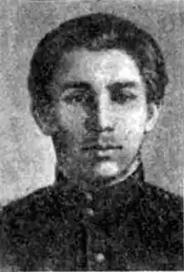

Василь Чумак
(1901 — 1919)
Три перші вірші поета "До праці", "Не вам", "Далі" були опубліковані в листопаді в 1917p., a 1918p. пролунав свіжий, бадьорий голос поета: Більше надії, брати! Місця сумніву нема — сміло і прямо іти, ширше ступать до мети з міццю, що скелі лама. Ці рядки, згодом покладені на музику, стали однією з улюблених пісень повстанців, що бачили в революції визволення від соціального й національного гніту. Проте самого поета серед них уже не було. Разом з Г. Михайличенком і К. Ковальовою в ніч з 20 на 21 листопада 1919р. Василь Чумак був розстріляний денікінцями в Києві. На той час поетові не сповнилося й дев'ятнадцяти років. Народився В. Чумак 7 січня 1901р. в містечку Ічня на Чернігівщині. "Батьки — небагаті селяни-хлібороби", як зазначав сам поет, відповідаючи на запитання анкети товариства "Час". Навчався після початкової школи в Ічнянському чотирикласному училищі (1910 — 1914) та Городнянській гімназії (1914 — 1918), щороку приносячи батькам похвальні листи. Дуже рано відчув нахил до поетичної творчості. Перший вірш у прозі "написав у 1910 році на місцевому жаргоні". Рано сформулювалася й національна свідомість поета, про що свідчать уже перші відомі нам вірші ("Пісні минулих часів", 1913): Пробудіться, орли сизі, Славні козаченьки, Заверніть колишню славу України-неньки. Швидко проминає пора учнівства, і за три роки (1917 — 1919) В. Чумак стає першорядним поетом, громадським й культурним діячем. Перша і єдина книжка віршів "Заспів" була підготовлена ще самим автором, але побачила світ уже після його трагічної загибелі від рук денікінців. Книжка справила великий вплив на розвиток революційно-романтичного напряму в українській поезії, а ім'я її автора ставили поряд з П. Тичиною, В. Елланом, М. Семенком. Засвоївши уроки модерністів, він зумів уже після М. Вороного, О. Олеся та Г. Чупринки створити щось принципово нове. Це був поет, у творчості якого вже чітко окреслився демократичний ідеал: ...Хай летять мої думи-пісні-метеори — Не в палаци гучні, не в безмежні блакитні простори, А в хатину людську, де в кутках оселилися злидні. Мої співи прості і робочому серцеві рідні. Книжка починається циклом "З ранкових настроїв", потім поет ніби повертається до своїх модерністських настроїв, вплітаючи у цикли "Мрійновтома" й "Осіннє" мінорні мотиви суму, вмирання, навіть певні релігійні асоціації. Однак тут є і натяк на лютнево-березневі події, й заперечення декадентських мотивів: В перебіжнім шумовинні ланки-бризки марсельез: хай загине, хай загине мрійновтома сонних плес. ("Березневий каламут") Рвучкий ритм, мелодійність інтонації, оригінальні метафори, благозвучні рими та асонанси, характерні епітети-прикладки, лаконізм виразу — все це виказує природний поетичний талант, який спирається на національні художні традиції і збагачений усіма здобутками поетичної, художньої культури, У своїх творчих пошуках поет часом досягав віртуозності, як у вірші "Ой, там у полі — на обніжку": Ой та й погасли... — ті жарини — змерзли волошки в межі... ...Білий метелик лине та лине, білий метелик сніжин. Не менш довершений і вірш "Обніжок", де в одній строфі передано цілу гаму настроїв: Вранці — роси. Марити. Мовчати. Колос. Шум. Волошки. Знов волошки. Материнка. Конюшина. Смутку трошки. Вранці — роси. Марити. Мовчати. У поезіях "Облетіли пелюстки моїх казок", "Айстри", "Гірлянди тьмяного намиста", "Несли твою труну" виразно помітні впливи естетики модернізму і, ясна річ, враження від перебування у в'язниці та підпіллі. І, нарешті, "Цикл соціального". Триптих "Червоний заспів" згодом посяде своє місце в усіх хрестоматіях та антологіях цього періоду: Риємо-риємо-риємо землю неначе кроти; з кутів плазуємо зміями, сіємо-сіємо-сіємо буйні червоні цвіти... У 1918 — 1920 pp. Київ дванадцять разів переходив із рук в руки найрізноманітніших політичних і військових сил. Ось чому "десь поза гратами-мурами... ранки конають ясні", ось чому треба було кидати в лице можновладців: "Владарі світу з коронами, вже непотрібні ви нам". Таким же закликом до боротьби є і другий вірш триптиха, а третій закінчується лівацьким рефреном "ми гімни тобі заплели, червоний тероре!". Подібна лірика заохочувалася більшовицькими ідеологами. Цикл "Революція", що вміщує п'ять восьмирядкових віршів-мініатюр, — це своєрідний ліро-епос доби, що однозначно вітається поетом. Знайдемо тут широко цитовані рядки: "на кремінь — крицю: буде світ! Ми непохитні, мов граніт", бо "творим блиск, і творим дні!". Це і був маніфест нового революційного мистецтва. Цікаво, що в четвертому вірші (він, до речі, має два варіанти), як і перший, змінюється символіка кольорів; якщо в першому: "Вище їх! До блакиті! Ми птиці!", то в другому — "Туди — в червоні береги — з низин. Туди! Ми — крила! Птиці!". Якщо у поетичних циклах "З ранкових настроїв", "Мрійновтома", "Осіннє" переважають "білі-білі душі нарцисів", "блакитна далечінь", "злотні тополі", то у "Циклі соціального" домінує червоний колір. Дуже характерний передостанній твір циклу ("Офіра"), провідна думка якого — виправдання самопожертви (і жертв?) в ім'я революції, революційного мистецтва: На плакатах не атрамент. І не фарби. Кров. Пензлі-пучки умочайте в колектив-цебро. А ось як це обіграно в програмній статті В. Чумака "Революція як джерело": "Тремтять незримі струни поєднання, і молекула-мистецтво горить, ятриться, бризкає кров'ю і погасає, і знов горить — сипле іскрами слів, фарб, згуку, черпаючи творчий матеріал з джерел революційної дії..." Талановитий поет, юнак, по суті, був захоплений магією перетворень, і його візії майбутнього оповиті серпанком утопії. А проте, — слід визнати тепер, — вони ховають у собі й "вишкір розбудженого звіра". Чи не тому його поезія, хоч мала і свій національний, народотворчий смисл бодай завдяки потенції живого художнього слова, була так високо піднесена в наступні страшні часи? В. Чумак був не лише поетом, а й здібним прозаїком. Три оповідання — "Товарищ" (російською мовою), "Що було" і "Пожовклі сторінки" — присвячені старій школі, середовище якої автор добре знав. Етюд "Бризки пролісок" відбиває настрої учнів гімназії після Лютневої революції. Шкіц "Братові — руку" містить полеміку з пролеткультівськими поетами, які стверджували, що "только в городе возможны и движенье, и борьба". Як своєрідну мемуарну прозу слід розглядати й тюремний щоденник В. Чумака "За гратами". С. Крижанівський Історія української літератури ХХ ст. — Кн. 2. — К.: Либідь, 1998.